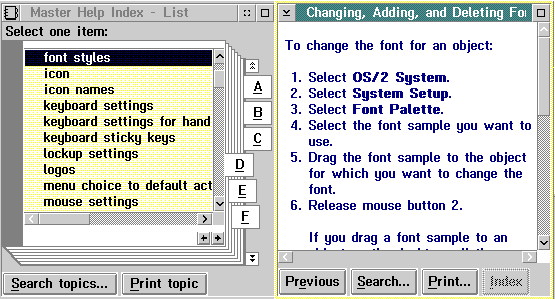

The OS/2 operating system provides online help that can be accessed through both a Master Help Index and a Glossary. The Master Help Index and the Glossary are both collections of alphabetized pointers to information panels. Their primary purpose is to provide quick access to help topics. With them, you can provide such features as:
The following figure shows an example of the Master Index window and the opened help-text window, "Changing, Adding, and Deleting Fonts."
For more information, see Customizing Master Help Index and Glossary Objects